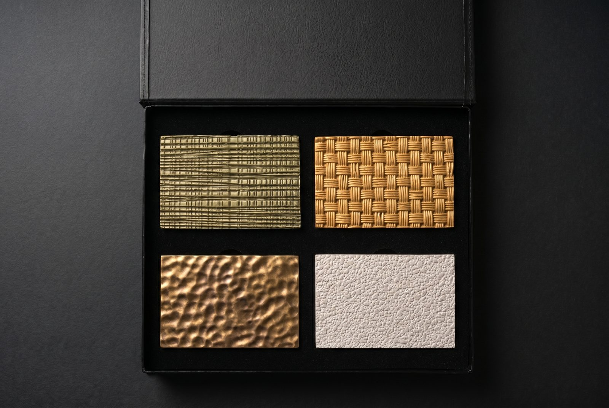

Yüzey İşlemi Neden Rölyefte Daha Önemlidir
Düz bir yüzeyde kaplama basitçe bir renktir. Üç boyutlu bir rölyef panelde ise kaplama bir aydınlatma enstrümanına dönüşür. Yüzey kaplaması, rölyef derinliği ve ortam ışığı arasındaki etkileşim, gün boyunca değişen gölge gradyanları, vurgu çıkıntıları ve tonal derinlik yaratır. 30 mm rölyefli mat beyaz bir panel, aynı geometrinin yarı parlak bronz halinden tamamen farklı okunacaktır — form değişmediği halde, ışık yüzeyle temelden farklı şekillerde etkileşime girdiği için.
Bu, yüzey işleme şartnamesinin sonradan düşünülecek bir kalem olmadığı anlamına gelir. Geometrinin nasıl algılandığını şekillendiren bir tasarım kararıdır ve desen seçimiyle birlikte düşünülmelidir, sonra değil.
Elde Tutulan Yüzeyler
Numune kutumuzda farklı renklerde artizan finish uygulanmış Lumina PMAG™ numuneleri bulunur. Aynı rölyefin her renkte ve yüzeyde nasıl okunduğunu, tek bir paneli şartnameye bağlamadan önce görmenin en hızlı yoludur.

| Yüzey Türü | Açıklama | Uygun Kullanım | Süre Etkisi |
|---|---|---|---|
| Boyaya hazır | Panel atölyeden astarlı çıkar; projenin kendi boyası herhangi bir RAL veya NCS referansında uygulanır, renk ve parlaklığı sahadaki boyacı belirler. | Mimarın boya şartnamesiyle bitirilen projeler, marka rengi uygulamaları, komşu boyalı duvarlarla eşleşen paneller | Standart süreye dahil |
| Derin mat | Yüzeyin üstünde değil içinde kalır; panel derin matlığını ve ham dokusunu korurken parmak izine, toza ve rutin temizliğe dayanır. | Galeriler, konut iç mekânları, trafiği düşük kuru koridorlar | Proje takviminde netleşir |
| Günlük aşınmaya, sürtünmeye ve temizlik protokollerine göre ayarlanmış iki katlı mat film; rölyef ve gölge plastik bir görünüme kaçmadan okunur kalır. | Otel lobileri, koridorlar, lounge alanları, konaklama tesislerinin ortak alanları | Proje takviminde netleşir | |
| Su sıçramasına dayanıklı | Su sıçramasına, yağa, dezenfektana ve temizlik maddelerine karşı dayanıklı mat film; paneli sarartmaz, donuklaştırmaz. | Restoran ve bar iç mekânları, otel tuvaletleri, mutfağa komşu duvarlar. Duş ve spa ıslak bölümleri gibi sürekli ıslak kalan alanlar için uygun değildir. | Proje takviminde netleşir |
Rölyef Derinliği Yüzeyle Nasıl Etkileşir
Sığ rölyef (5–15 mm) ince gölge oyunları üretir. Mat parlaklıkta açık renkli yüzeyler, yumuşak gradyanlar aracılığıyla geometriyi vurgular. Sığ rölyefte koyu renkli yüzeyler algılanan derinliği düzleştirebilir — gölgeler taban renginin içinde kaybolur.
Derin rölyef (25–40 mm) renk ne olursa olsun dramatik kontrastlar yaratır. Ancak parlaklık seviyesi kritik hale gelir: derin rölyefte yüksek parlak bir yüzey, deseni bastırabilecek sert speküler vurgular oluşturur. Aynı geometride mat veya saten bir yüzey, gözün tam üç boyutlu formu okumasına izin verir. Çoğu mimari uygulama için mat ile düşük saten arası en kontrollü sonucu üretir.
Rölyef paneller için renk belirlerken, ekran görüntüsü yerine her zaman fiziksel numune referans alın. Aynı RAL rengi, gölge birikimi nedeniyle derin rölyef panelin girintili alanlarında 2–3 ton daha koyu okunacaktır. Rengi düz renk kartı yerine bitmiş rölyef numune üzerinde onaylamanızı öneriyoruz.
Malzemeye Özel Hususlar
✓ Mineral silikat boya
✓ Artizan finish
✓ Dokulu kaplamalar
● Epoksi — önce yapışma testi yapın
✓ Seramik-pürüzsüz taban yüzey
PMAG neredeyse tüm iç mekan boya sistemlerini kabul eder. Alfa alçı döküm tarafından üretilen seramik-pürüzsüz yüzey, ağır astar gerektirmeden mükemmel bir yapışma alt tabakası sağlar. Standart RAL renkleri için tek kat astar ve ardından iki kat boya yeterlidir. Artizan finish uygulamaları bu yüzeye atölyede yapılır.
Renk Eşleştirme Süreci
Belirli bir marka rengi, miras eşleşmesi veya özel ton gerektiren projeler için eksiksiz bir renk geliştirme hizmeti sunuyoruz. Süreç bir referansla başlar — RAL/NCS kodu, Pantone swatch, fiziksel malzeme numunesi veya hatta bir fotoğraf. Bu referanstan bir test kaplaması geliştirerek bir rölyef numune bölümüne uyguluyoruz ve tasarım ekibine amaçlanan aydınlatma koşullarında onay için gönderiyoruz.
Renk onayı, standart referanslar için genellikle bir iterasyon, karmaşık eşleşmeler (metalik, sedefli veya gradyan efektleri) için iki iterasyon gerektirir. Onay numunesi, üretim partisi için sözleşmesel renk standardı haline gelir.
Şartnamenize Neleri Dahil Etmeli
Rölyef paneller için eksiksiz bir yüzey işleme şartnamesi şunları içermelidir: renk referansı (RAL, NCS, Pantone veya “onaylı numuneye eşle”), parlaklık seviyesi (mat, saten, yarı parlak veya parlak), artizan finish seçeneği (boyaya hazır, mat, su sıçramasına dayanıklı ya da özel renk) ve ortama özgü performans gereksinimleri — yiyecek hizmet alanları için yıkanabilirlik veya güneşe maruz iç mekanlar için UV direnci gibi.